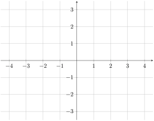
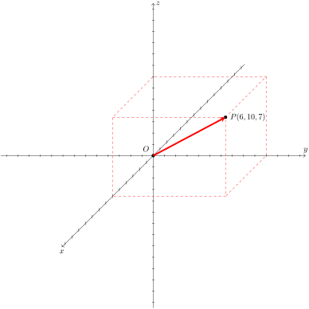
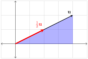
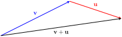
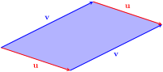
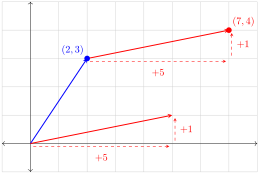

The set of all real numbers is denoted by \(\R\text{.}\) It is convenient to associate real numbers with points on a line, called the real number line.
The set of all ordered pairs \((x, y)\text{,}\) where \(x\) and \(y\) are real numbers, is called \(\R^2\text{.}\) Using set notation we write:
Geometrically speaking, \(\R^2\) can be associated with a coordinate plane in which we refer to each point by its \(x\) and \(y\) coordinates.

The set of all ordered triples \((x, y, z)\text{,}\) where \(x\text{,}\)\(y\) and \(z\) are real numbers, is called \(\R^3\text{.}\)
\begin{equation*}
\R^3=\{(x, y, z):x,y, z\in \R\}
\end{equation*}
Geometrically, an ordered triple of \(\R^3\) is associated with a point of a three-dimensional space whose position is given by \(x\text{,}\)\(y\) and \(z\) coordinates.
Here is a hands down example:
Example1.1.1.
The following points are shown plotted in \(\R^3\text{.}\)
\(\displaystyle P(6, 8, 7)\)
\(\displaystyle Q(4, -6, 9)\)
\(\displaystyle R(-3, 9, -10)\)
Each pair of axes in \(\R^3\) determines a plane. The resulting three planes are called coordinate planes. Each coordinate plane is named after the axes that determine it. Thus, we have the \(xy\)-plane, \(xz\)-plane, and \(yz\)-plane. Coordinate planes intersect at the point \((0, 0, 0)\text{,}\) called the origin, and subdivide \(\R^3\) into eight regions, called octants.
The set of all ordered \(n\)-tuples \((x_1, x_2, \ldots, x_n)\text{,}\) where \(x_i\) is a real number for \(1\leq i\leq n\text{,}\) is called \(\R^n\text{.}\)
The point \((0,0,\ldots, 0)\) in \(\R^n\) is called the origin.
\(\R^n\) cannot be visualized for \(n\gt3\text{,}\) but many familiar ideas, such as the distance formula, can be generalized to \(\R^n\text{.}\)
Subsection1.1.2Distance in \(\R^n\)
In this section we will establish a formula for the distance between two points in \(\R^n\text{.}\) We begin by observing that the distance between two numbers (points) \(x_1\) and \(x_2\) on the number line is given by \(|x_1-x_2|\text{.}\) (Why do we use the absolute value brackets?).
We can use the Pythagorean Theorem to establish the distance formula for points of \(\R^2\text{.}\)
Let \(A(x_1, y_1)\) and \(B(x_2, y_2)\) be points in \(\R^2\text{.}\) By the Pythagorean Theorem we have
Why were we able to drop the absolute value brackets?
The distance formula for points in \(\R^3\) can also be derived using the Pythagorean Theorem. Let \(A(x_1, y_1, z_1)\) and \(B(x_2, y_2, z_2)\) be points of \(\R^3\text{.}\) Use the navigation bar in the following GeoGebra interactive to walk through the steps of the derivation of the distance formula.
Figure1.1.2.Click the arrows at the bottom of the image to progress through the illustration of the distance formula in \(\R^3\text{.}\) A larger version of this activity is available here 1
https://www.geogebra.org/calculator/dc267r6v
.
Formula1.1.3.
Let \(A(x_1, y_1, z_1)\) and \(B(x_2, y_2, z_2)\) be points in \(\R^3\text{.}\) The distance between \(A\) and \(B\) is given by
Observe the similarity of pattern in the distance formulas for \(\R^1\text{,}\)\(\R^2\) and \(\R^3\text{.}\) We will take advantage of this pattern to define the distance between two points of \(\R^n\text{.}\)
Formula1.1.4.
Let \(A(a_1, a_2,\ldots ,a_n)\) and \(B(b_1, b_2,\ldots ,b_n)\) be points in \(\R^n\text{.}\) The distance between \(A\) and \(B\) is given by
A scalar is a quantity that has size, often called magnitude, but no direction. For example, temperature, mass and speed are scalars. In this course, scalars will typically be real numbers, but we will also see complex numbers on a few occasions.
A vector has magnitude and direction. For example, velocity is a vector because it tells us how fast the object is traveling and also the direction of travel.
If an object is traveling along a number line, the direction of travel is given by the sign of its velocity (positive or negative), while the speed is given by the absolute value of the velocity. If the object is traveling in a plane or in space, direction of travel can be described by an arrow, while the speed can be represented by the length of the arrow. Graphically speaking, vectors in \(\R^2\) and \(\R^3\) look like this:
A vector can be denoted by a lower-case letter with an arrow over the top (like this: \(\overrightarrow{u}\) ), or a bold lower-case letter (like this: \(\mathbf{u}\)).
The magnitude, or length, of a vector is denoted by double absolute value brackets. For example, the magnitude of \(\mathbf{u}\text{,}\) is denoted by \(\norm{\mathbf{u}}\text{.}\) A vector of zero length and no direction is called the zero vector. We denote the zero vector by \(\overrightarrow{0}\) or \(\mathbf{0}\text{.}\) Going forward, we will use the terms magnitude of a vector and length of a vector interchangeably.
Sometimes it is convenient to refer to a vector by naming the endpoints of the arrow. In the figure below, point \(A\) is the tail, and point \(B\) is the head of the vector.
We refer to this vector as \(\overrightarrow{AB}\text{.}\)
Subsection1.1.4Vectors in Standard Position
Vectors that point in the same direction and have the same length are said to be equivalent. For example, vectors \(\mathbf{u}\text{,}\)\(\mathbf{v}\) and \(\mathbf{w}\) in the figure below are equivalent. We write \(\mathbf{u}=\mathbf{v}=\mathbf{w}\text{.}\)
For the purpose of developing standard, convenient notation, we observe that every vector is equivalent to some vector whose tail is at the origin. Vectors with tails at the origin are said to be in standard position. We will refer to each vector in standard position by the coordinates of its head. For example, a vector in standard position whose head is located at the point \((2, 1)\) will be referred to as \(\begin{bmatrix}2\\1\end{bmatrix}\text{.}\)
Vectors \(\mathbf{u}, \mathbf{v}\) and \(\mathbf{w}\) in the figure are equivalent to vector \(\begin{bmatrix}2\\1\end{bmatrix}\text{.}\) We write \(\mathbf{u}=\mathbf{v}=\mathbf{w}=\begin{bmatrix}2\\1\end{bmatrix}\text{.}\) Number \(2\) is called the first component of the vector (or the \(x\)-component) while number \(1\) is the second component (or the \(y\)-component). The form \(\begin{bmatrix}2\\1\end{bmatrix}\) is called the component form.
Vector \(\begin{bmatrix}2\\1\end{bmatrix}\) is an example of a column vector. Occasionally, we will find that representing this vector as a row vector \([2, 1]\) is more convenient.
Column (or row) representation of vectors in component form allows us to go beyond the physical and geometric definition, and think of vectors more abstractly as arrays of numbers.
Our next goal is to find a process for writing any vector in the coordinate plane in component form.
Example1.1.5.
Consider vector \(\mathbf{v}\) shown below. We will express \(\mathbf{v}\) in component form.
Note that the vector has a ``run" of \(2\) and a ``rise" of \(3\text{.}\) If we construct a vector with tail at the origin, a ``run" of \(2\) and a ``rise" of \(3\text{,}\) we will have a vector in standard position equivalent to vector \(\mathbf{v}\text{.}\)
The component form for the vector we constructed is \(\begin{bmatrix}2\\3\end{bmatrix}\text{.}\) This gives us \(\mathbf{v}=\begin{bmatrix}2\\3\end{bmatrix}\text{.}\)
The approach we used in Example 1.1.5 is applicable to specific vectors that can easily be visualized. What we need now is an algebraic approach that can be generalized to higher dimensions and more abstract situations.
Let’s return to vector \(\mathbf{v}\) of Example 1.1.5. Suppose we were to slide vector \(\mathbf{v}\) into standard position. Consider what would happen to the tail of \(\mathbf{v}\) as we do so.
What happens to the tail of the vector has to happen to the head
We subtracted \(2\) from the \(x\)-coordinate and added \(1\) to the \(y\)-coordinate of the tail. To find the new location of the head we subtract \(2\) from the \(x\)-coordinate of the head, and add \(1\) to the \(y\)-coordinate of the head. This gives us \((4-2, 2+1)\text{.}\) So, the new location of the head is \((2, 3)\text{,}\) and \(\mathbf{v}=\begin{bmatrix}2\\3\end{bmatrix}\text{.}\)
If you look back at what we did you will find that the components of \(\mathbf{v}\) were computed by subtracting the coordinates of the tail from the coordinates of the head
The following diagram summarizes and generalizes our findings.
Let \(\overrightarrow{AB}\) be a vector in \(\R^2\text{,}\) with tail at point \(A(a_1, a_2)\) and head at point \(B(b_1, b_2)\text{.}\) As we slide \(\overrightarrow{AB}\) into standard position by moving point \(A\) to the origin, point \(B\) travels along with point \(A\) by undergoing the same horizontal and vertical shifts. We now have an equivalent vector \(\overrightarrow{A'B'}\) in standard position. The diagram suggests the following formula.
Formula1.1.6.“Head - Tail” Formula in \(\R^2\).
Suppose a vector’s tail is at point \(A(a_1, a_2)\) and the vector’s head is at \(B(b_1, b_2)\text{,}\) then
Definitions of standard position and component form for vectors in \(\R^3\) are analogous to their counterparts for vectors in \(\R^2\text{.}\) For example, vector \(\overrightarrow{OP}\) in the figure below, is in standard position and can be written in component form as \(\overrightarrow{OP}=\begin{bmatrix}6\\10\\7\end{bmatrix}\text{.}\)

If a vector is not in standard position but the location of its head and tail are known, a three-dimensional version of the ``Head - Tail" formula can be used to express the vector in component form.
Formula1.1.7.“Head - Tail” Formula in \(\R^3\).
Suppose a vector’s tail is at point \(A(a_1, a_2, a_3)\) and the vector’s head is at \(B(b_1, b_2, b_3)\text{,}\) then
We cannot see \(\R^n\) for \(n\gt3\text{,}\) but we can conceptualize it by generalizing what we know about \(\R^2\) and \(\R^3\text{.}\) A vector \(\mathbf{v}\) in standard position whose head is located at \((v_1, v_2, \ldots ,v_n)\) can be written in component form as \(\mathbf{v}=\begin{bmatrix}v_1\\ v_2\\ \vdots \\v_n\end{bmatrix}\text{.}\)
Recall that we defined the zero vector as a vector that has length \(0\) and no direction. In component form, the zero vector is a vector all of whose components are \(0\text{.}\)
We conclude this section by stating the generalized ``Head - Tail" formula.
Formula1.1.8.“Head - Tail” Formula in \(\R^n\).
Suppose a vector’s tail is at point \(A(a_1, a_2, \ldots ,a_n)\) and the vector’s head is at \(B(b_1, b_2, \ldots ,b_n)\text{,}\) then
Vector quantities, such as velocity and force, have magnitude and direction. The magnitude of a vector quantity is the length of the vector. For example, if a force of 10 Newtons is applied to an object, we would represent the force by a 10-unit-long vector.
The magnitude of a vector is denoted by double absolute value brackets. In the case of force \(\mathbf{F}\text{,}\) we write
To find the length of a vector, we need to find the distance between the tail of the vector and its head. Recall that in \(\R^2\text{,}\) the distance between \(A(a_1, a_2)\) and \(B(b_1, b_2)\) is given by
A vector \(\mathbf{v}=\begin{bmatrix}v_1\\ v_2\end{bmatrix}\) has the length of the vector in standard position with its head at \((v_1, v_2)\) and tail at \((0, 0)\text{.}\) We find the length of \(\mathbf{v}\) using the distance formula
The distance formula for points in \(\R^3\) is analogous to the distance formula in \(\R^2\text{.}\) Given two points \(A(a_1, a_2, a_3)\) and \(B(b_1, b_2, b_3)\text{,}\) the distance between them is given by
To find the length of vector \(\mathbf{v}=\begin{bmatrix}v_1\\ v_2\\ v_3\end{bmatrix}\text{,}\) we find the distance between \((v_1, v_2, v_3)\) and \((0, 0, 0)\text{.}\)
The following definition follows directly from the distance formula for \(\R^n\) in the same way that expressions ((1.1.4) and (1.1.5) followed from distance formulas in \(\R^2\) and \(\R^3\text{.}\)
Definition1.1.12.
Let \(\mathbf{v}=\begin{bmatrix}v_1\\ v_2\\ \vdots \\v_n\end{bmatrix}\) be a vector in \(\R^n\text{,}\) then the length, or the magnitude, of \(\mathbf{v}\) is given by
The product of vector \(\mathbf{u}\) with a positive scalar \(k\text{,}\) is a vector \(k\mathbf{u}\) that points in the same direction as \(\mathbf{u}\text{,}\) and whose length is equal to the length of \(\mathbf{u}\) multiplied by \(k\text{.}\) For example, the figure below shows vectors \(\mathbf{u}\) and \(2\mathbf{u}\text{.}\) The vectors point in the same direction but the magnitude of \(2\mathbf{u}\) is twice the magnitude of \(\mathbf{u}\text{.}\)
If a vector \(\mathbf{u}\) is multiplied by \(-1\text{,}\) the resulting vector is denoted by \(-\mathbf{u}\text{.}\) It has the same length as vector \(\mathbf{u}\text{,}\) but points in the opposite direction.
Subsection1.1.9Algebra of Scalar Multiplication
We know what scalar multiplication accomplishes geometrically. Our goal now is to translate this idea to an algebraic operation.
Exploration1.1.1.
Consider vector \(\mathbf{u}=\begin{bmatrix}4\\2\end{bmatrix}\text{.}\) We will find an algebraic approach for multiplying \(\mathbf{u}\) by \(\frac{1}{2}\text{.}\)
Consider \(\mathbf{u}\) to be the hypotenuse of a right triangle.
The head of \(\frac{1}{2}\mathbf{u}\) should be the midpoint of the hypotenuse.

From our study of similar triangles in geometry, we know that if we drop perpendiculars from the midpoint of the hypotenuse to the two legs of the triangle, the perpendiculars will bisect the legs.
This tells us that to find \(x\) and \(y\) components of \(\frac{1}{2}\mathbf{u}\) we must multiply each component of \(\mathbf{u}\) by \(\frac{1}{2}\text{.}\)
Consider vector \(\mathbf{v}=\begin{bmatrix}3\\1\end{bmatrix}\text{.}\) It is clear that multiplying the components of \(\mathbf{v}\) by \(-1\) reverses the direction of \(\mathbf{v}\) while preserving its magnitude.
If \(\mathbf{v}=k\mathbf{u}\) (\(k\neq 0\)), then \(\mathbf{u}=\frac{1}{k}\mathbf{v}\text{,}\) and we say that \(\mathbf{v}\) and \(\mathbf{u}\) are scalar multiples of each other.
Given vectors \(\mathbf{v}\) and \(\mathbf{u}\text{,}\) we can find the sum \(\mathbf{v}+\mathbf{u}\) by sliding \(\mathbf{u}\) so as to place its tail at the head of vector \(\mathbf{v}\text{.}\) The vector connecting the tail of \(\mathbf{v}\) with the head of \(\mathbf{u}\) is the sum \(\mathbf{v}+\mathbf{u}\text{,}\) as shown in the figure below.

This sum can be interpreted as the total displacement that occurs when traveling along the two vectors starting at the tail of \(\mathbf{v}\) and finishing at the head of \(\mathbf{u}\text{.}\)
Note that if we place the tail of \(\mathbf{v}\) at the head of \(\mathbf{u}\) instead, the sum vector \(\mathbf{u}+\mathbf{v}\) will be the same as \(\mathbf{v}+\mathbf{u}\text{.}\) Thus, addition of vectors is commutative.
Most of the time we deal with vectors in standard position. So all vector tails are located at the origin. This motivates the parallelogram method for adding vectors.
Observe that if we slide vectors \(\mathbf{u}\) and \(\mathbf{v}\) so that their tails are together, the two vectors determine a parallelogram.
Opposite sides of a parallelogram are congruent and parallel.

Applying the ``head-to-tail" addition method shows that the sum \(\mathbf{v}+\mathbf{u}\) is the diagonal of the parallelogram determined by \(\mathbf{v}\) and \(\mathbf{u}\text{.}\)
Subsection1.1.11Algebra of Vector Addition
We now know how to add vectors geometrically. Our next goal is to translate this idea to an algebraic operation.
Exploration1.1.3.
In this problem we will find the sum of \(\mathbf{u}=\begin{bmatrix}5\\1\end{bmatrix}\) and \(\mathbf{v}=\begin{bmatrix}2\\3\end{bmatrix}\text{.}\)
To use “head-to-tail” addition method, or to construct the side of a parallelogram opposite of \(\mathbf{u}\text{,}\) we want to slide \(\mathbf{u}\) so that its tail is at the point \((2, 3)\text{.}\) Observe that \(\mathbf{u}\) has a ``run" of \(5\) and a ``rise" of \(1\text{.}\) If we start at \((2, 3)\text{,}\) go over \(5\) then up \(1\text{,}\) we will land on \((7, 4)\text{.}\)

The sum \(\mathbf{u}+\mathbf{v}\) is shown below.
We see that the components of \(\mathbf{v}+\mathbf{u}\) can be found by adding the components of \(\mathbf{v}\) and \(\mathbf{u}\text{.}\)
Let \(\mathbf{u}=\begin{bmatrix} u_1\\ u_2\\ \vdots\\ u_n \end{bmatrix}\) and \(\mathbf{v}=\begin{bmatrix} v_1\\ v_2\\ \vdots\\ v_n \end{bmatrix}\) be vectors in \(\R^n\text{.}\) We define \(\mathbf{u}+\mathbf{v}\) by
Subsection1.1.12Geometry of Vector Addition in \(\R^3\)
Vectors in \(\R^1\text{,}\)\(\R^2\text{,}\) and \(\R^3\) have the advantage in that we can gain insight into their behavior through visualization. Vectors in \(\R^1\) and \(\R^2\) are the easiest to visualize. Vectors in \(\R^3\) are a little trickier. The following exploration will help you visualize addition of vectors in \(\R^3\text{.}\)
Exploration1.1.4.
Adding two vectors amounts to finding the diagonal of a parallelogram determined by placing the two vectors tail to tail. This process is not limited to vectors of \(\R^2\text{.}\) Use the following GeoGebra interactive to add multiple vectors in \(\R^3\text{,}\) two vectors at a time, by constructing diagonals of parallelograms. To use the interactive
Define vectors \(\mathbf{u}\text{,}\)\(\mathbf{v}\) and \(\mathbf{w}\text{.}\)
Use check-boxes at the bottom of the right panel to display the parallelograms.
RIGHT-CLICK and DRAG the left panel to rotate the graph.
Figure1.1.16.A larger version of this activity is available here 2
https://www.geogebra.org/calculator/ccpev33m
.
The sum of two vectors can be visualized as the diagonal of a parallelogram. The sum of three (non-co-planar) vectors is the diagonal of a three-dimensional counterpart of a parallelogram, called a \emph{parallelepiped}. Each face of the parallelepiped is a parallelogram determined by two out of the three given vectors. The following GeoGebra exercise will help you visualize the sum of three vectors as the diagonal of a parallelepiped.
Define vectors \(\mathbf{u}\text{,}\)\(\mathbf{v}\) and \(\mathbf{w}\text{.}\) The sum is the diagonal of the parallelepiped. RIGHT-CLICK and DRAG the left panel to rotate the graph.
Figure1.1.17.A larger version of this activity is available here 3
https://www.geogebra.org/calculator/bpzfb7vr
.
Subsection1.1.13Vector Subtraction
We can find the difference of two vectors by interpreting subtraction as ``addition of the opposite". Thus,
Vector subtraction has an interesting geometric interpretation. As shown in the figure below, if \(\mathbf{v}+\mathbf{u}\) is a diagonal of the parallelogram determined by \(\mathbf{v}\) and \(\mathbf{u}\text{,}\) the difference \(\mathbf{v}-\mathbf{u}\) is the other diagonal of the same parallelogram.
Subsection1.1.14Properties of Vector Addition and Scalar Multiplication
Theorem1.1.18.
The following properties hold for vectors \(\mathbf{u}\text{,}\)\(\mathbf{v}\) and \({\bf w}\) in \(\R^n\) and scalars \(k\) and \(p\) in \(\R\text{.}\)
What can be said about all points \((x, y, z, w)\in \R^4\) that satisfy this equation?
Such points are equidistant from the origin.
Such points form a four-dimensional sphere of radius \(5\text{.}\)
Such points are located 5 units from the origin.
All of the above.
Exercise Group.
Sketch each pair of vectors described below. Express each vector in component form.
5.
Vector \(\mathbf{v}\) has a tail at \((-2,4)\) and a head at \((4,5)\text{.}\) Vector \(\mathbf{w}\) has a tail at \((8,-5)\) and a head at \((6,7)\text{.}\)
Vector \(\mathbf{v}\) has a tail at \((2,4,5)\) and a head at \((-2,4,8)\text{.}\) Vector \(\mathbf{w}\) has a tail at \((-3,4,5)\) and a head at \((7,7,8)\text{.}\)
Find the component form of vector \(\mathbf{v}\) in \(\R^2\) if we know that \(\norm{\mathbf{v}}=15\text{,}\) the \(x\) component of \(\mathbf{v}\) is \(-9\) and the vector is located in the third quadrant.
For a vector in \(\R^4\text{,}\) what are the possibilities for the fourth component if the length of the vector is 14, and the \(x\text{,}\)\(y\) and \(z\) components are 1, 5 and 13, respectively?